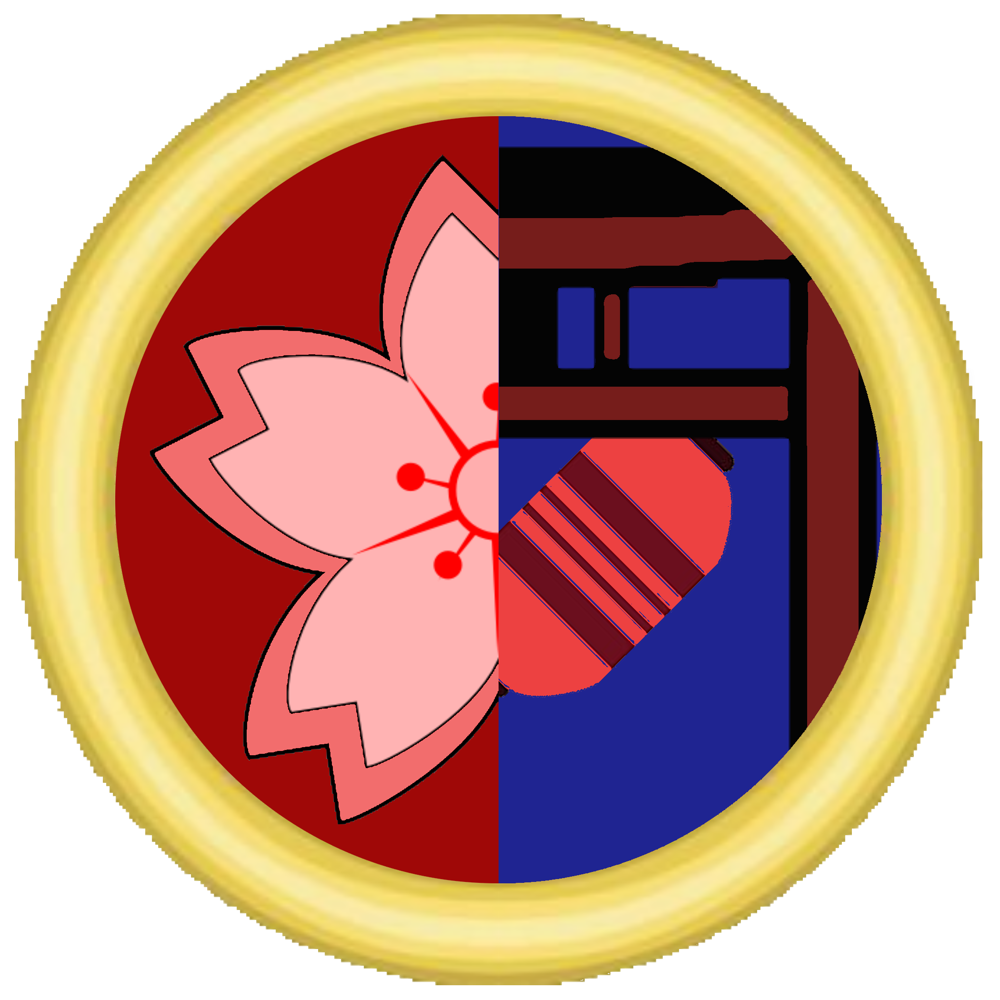
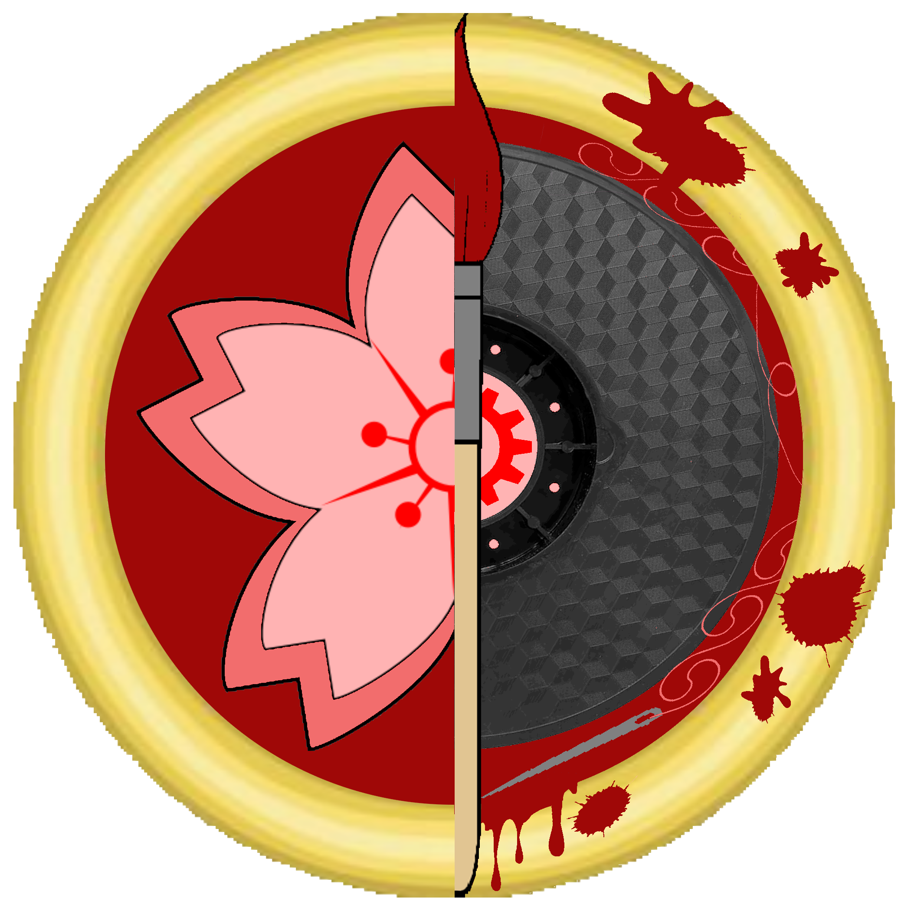
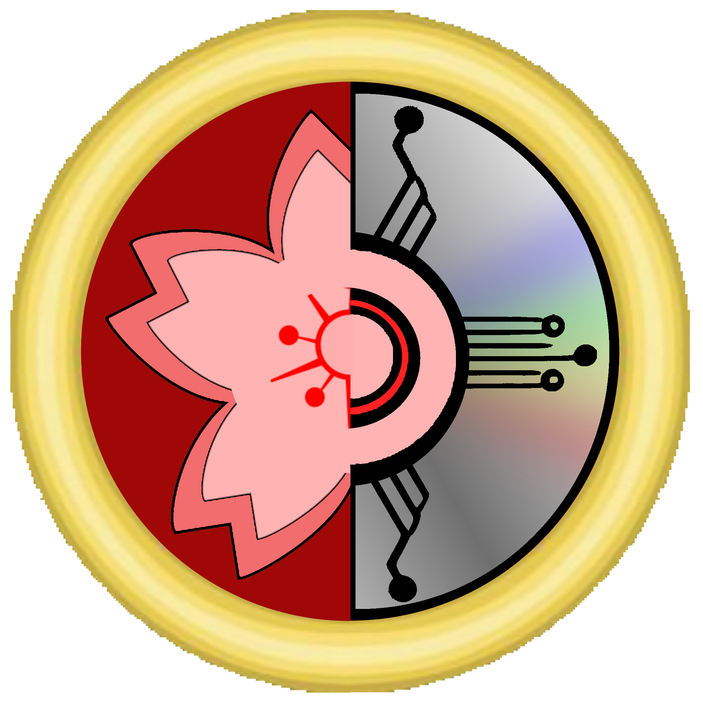

Členský oddíl Knihovní A Propagační (KAPR)
- Pracovní název „Členský oddíl 1“ je hlavní oddíl zodpovědný za správu literárního majetku spolku, správu členů a nábor nových členů.
- KAPR spravuje knihovnu, zodpovídá za dodržování knihovního řádu a poskytuje obsah knihovny k zapůjčení členům.
- KAPR je zodpovědný za „teoretické plánování“ všech kulturních akcí, festivalů, přednášek a výstav souvisejících s činností spolku.
- KAPR je zodpovědný za vytvoření a udržení „public image“ spolku a to všemi schválenými prostředky.
- KAPR je zodpovědný za vedení aktuálního seznamu členů, respektive databáze, která bude volně k nahlédnutí každému z žadatelů a bude obsahovat osobní informace, které budou přístupné jen členům Štábu spolku.
- KAPR je zodpovědný za sestavování náborových strategií, aklimatizaci nových členů a komunikaci s médii a stávajícími členy.
- KAPR spravuje obsah účtů sociálních sítí, obsah spolkových tiskovin (měsíčníků) a vzhled prostor, které spolek využívá/vlastní.

Členský oddíl Ručních Prací A Cosplayů (RPAC)
- Pracovní název „Členský oddíl 2“ je hlavní oddíl zodpovědný za výtvarnou, uměleckou a kreativní činnost, prováděnou členy spolku, konzultanty a dalšími spolupracovníky (sponzoři, brigádníci, cosplayeři).
- RPAC spravuje dílnu spolku, stroje, vybavení a materiály přítomné v dílně a oddílu svěřené.
- RPAC zodpovídá za dodržení bezpečnosti práce, respektive za poskytnutí dostatku informací členům o bezpečném zacházení se stroji, vybavením a materiály v dílně a oddílu svěřenými.
- RPAC zodpovídá za poskytnutí přiměřeného množství materiálů členům, kteří mají zájem o využití dílny pro výrobu cosplayů, rekvizit a dalších výrobků souvisejících s činností spolku.
- RPAC zodpovídá za vedení seznamu obsahu dílny a sepsání technického stavu a závad, které se vyskytují na strojích a vybavení oddílu svěřených.
- RPAC a jeho konzultanti zodpovídají za poskytnutí různé úrovně znalosti, expertízy a pomoci, kterou budou členové vyžadovat pro dokončení svých projektů. Rovněž pořádá workshopy, soutěže a školení, která mohou členům pomoct dokončit jejich projekty.

Členský oddíl Správy Dat A Technologií (SDAT)
- Pracovní název „Členský oddíl 3“ je vedlejší oddíl zodpovědný za zavádění nových technologií a údržbu počítačů, elektroniky vlastněných spolkem.
- SDAT spravuje internetovou stránku spolku, udržuje jí funkční a aktuální.
- SDAT spravuje přenosnou a nepřenosnou elektroniku spolku, zodpovídá za její zapůjčení a udržuje jí funkční.
- SDAT zodpovídá za ochranu osobních údajů, hesel a profilů členů, které jsou přístupné spolku pro jeho potřeby. Zároveň je povinen informovat členy o bezpečnosti na internetu a kyberprostoru.
- SDAT musí vést seznam majetku (elektroniky), kterou spolek vlastní.

Členský oddíl Animeologie
- Pracovní název „Členský oddíl 4“ je hlavní oddíl zodpovědný za vzdělávací činnost, přesněji šíření znalostí o Japonsku, jeho tradiční a populární kultuře.
- Oddíl je zodpovědný za uvádění celých, ověřitelných a pravdivých informací.
- Oddíl je zodpovědný za sestavování přednášek o různé délce a informační hodnotě.
- Oddíl je zodpovědný za správné uvádění citací a zdrojů, ze kterých čerpal.
- Oddíl nesmí využívat pro získávání informací práci ani dílo třetích stran bez jejich výslovného písemného souhlasu.
- Oddíl smí využívat pouze ilustrace, poskytnuté RPAC, respektive ilustrace vlastněné spolkem.
- Oddíl je zodpovědný za vytváření „odborných“ článků do spolkových měsíčníků.